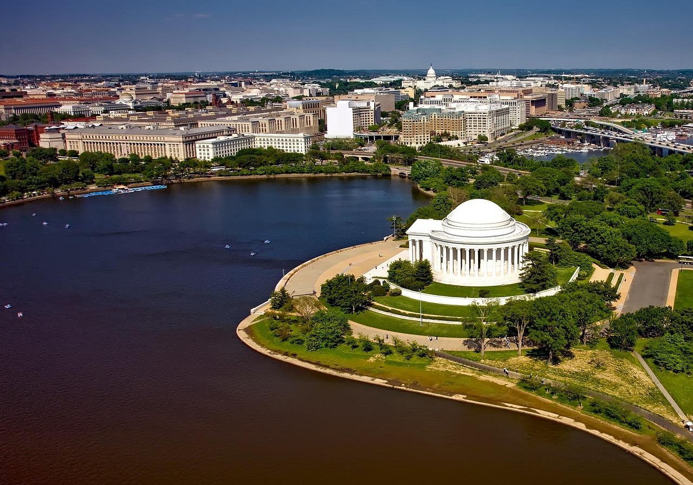
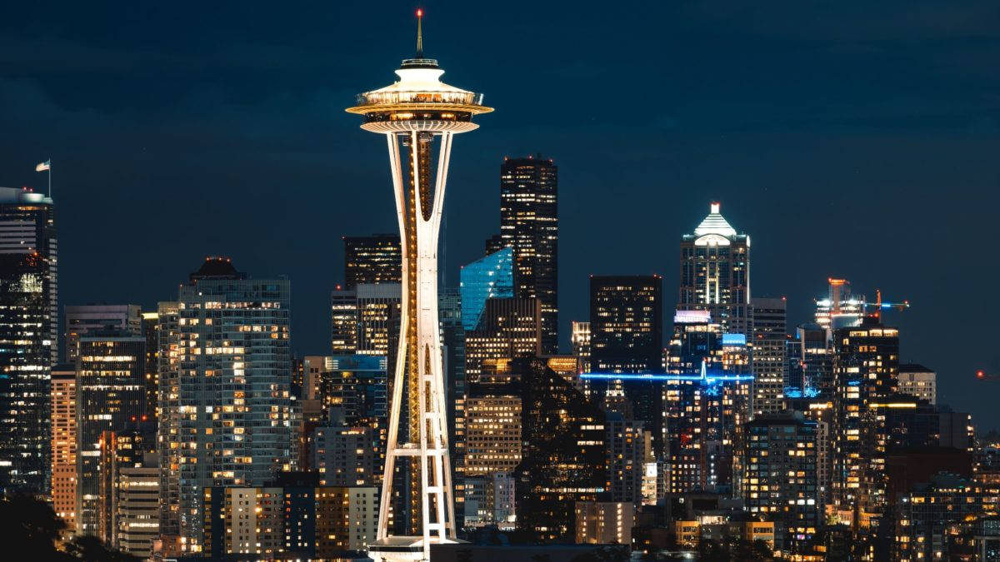
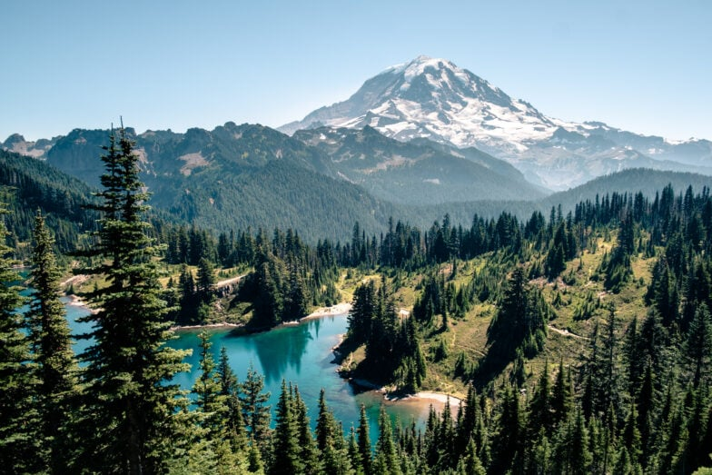
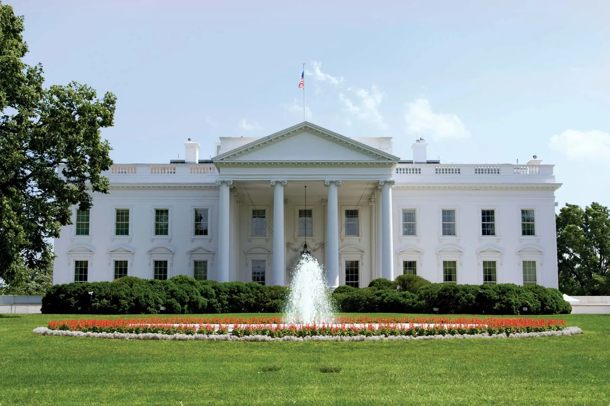

Washington is known for Seattle, Microsoft, Amazon, and beautiful forests.When people think of the American Pacific Northwest, one place stands out with its natural beauty, vibrant cities, and diverse landscapes. Known as "The Evergreen State", Washingon is a stunning blend of mountains, forests, oceans, and modern life. Whether you love outdoor adventures or bustling city energy, this state has something for everyone.
- It is a 605 foot tall landmark in Seattle,Washington.Built for the 1962 World's Fair that symbolizes the city's innovative sprit. It features an observation deck with a revolving glass floor offering a paranomic views from the city,mountains. Located in Seattle Center, it can withstand a 9.0 earthquake and 100mph winds

- It is a large active stratovolcano in Washington state, standing as the highest peak in both the state and the contiguous U.S. at 14,410 feet. Located in the Mount Rainier National Park, the mountain is about 59 miles south-southeast of Seattle and is a major icon of the Pacific Northwest.

- The White House at 1600 Pennsylvania Avenue NW in Washington DC is the official residence and principal workplace of the President of the United States. Construction began in 1792 , and John Adams was the first president to reside there, moving in during 1800. It was burned by the British in 1814 but was subseqeuntly rebuilt and has undergone many renovations, including a major structural overhaul by President Truman from 1948-1952.

| Capital | Olympia |
|---|---|
| Population | 7.7 million+ |
| Nickname | The Evergreen State |